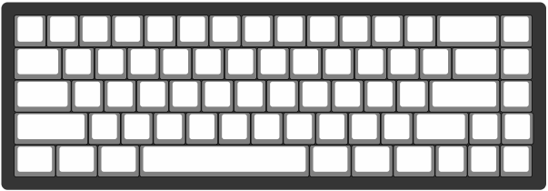
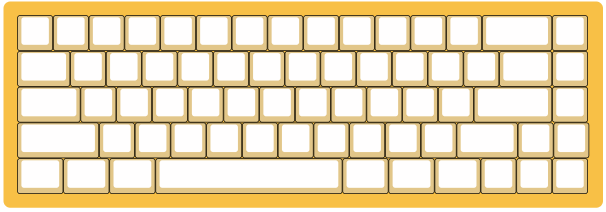
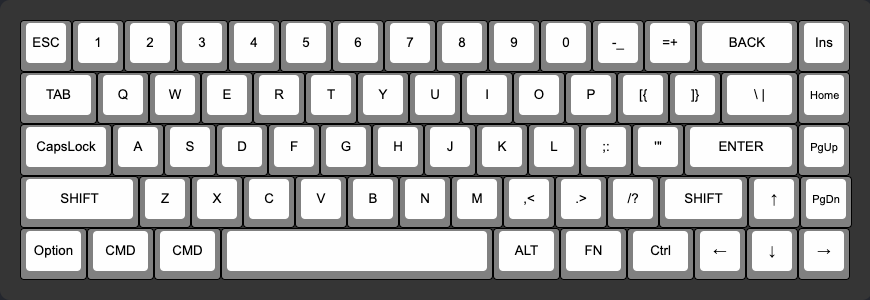
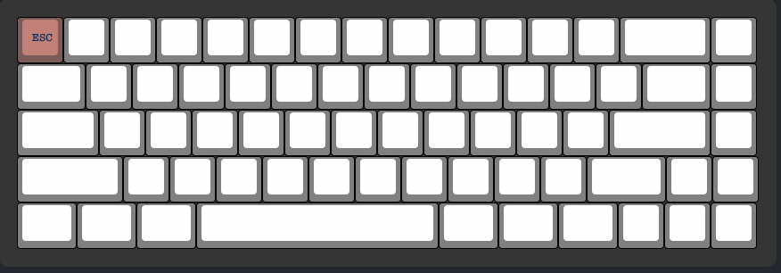
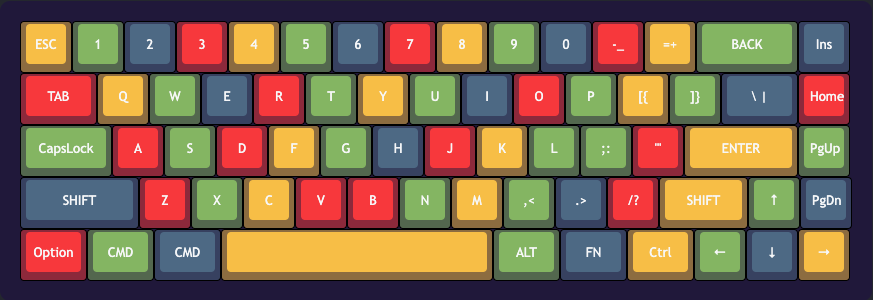
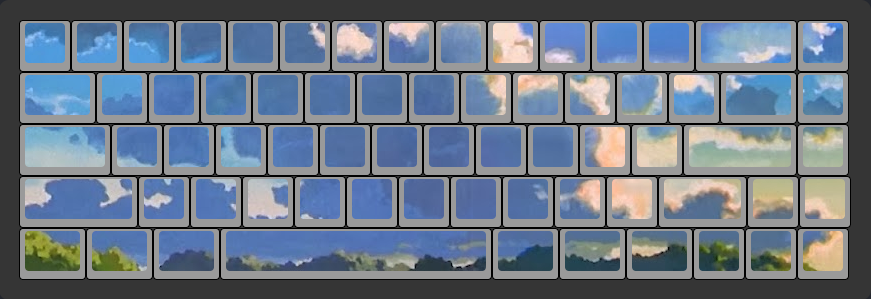

Installation
Include the script for glassic.js in your html page
<script defer type="text/javascript" src='glassic.js'></script>
Examples
Specify a div section where you would like to generate the keyboard
HTML:
<html lang="en">
<head>
<meta charset="utf-8">
<meta name="viewport" content="width=device-width, initial-scale=1">
<script defer type="text/javascript" src='glassic.js'></script>
<script defer type="text/javascript" src='demo.js'></script>
</head>
<body>
<div id="keyboard-layout">
</body>
</html>
Initialize the keyboard in your js file.
demo.js:
const keyBoard = new KeyBoardGenerator({
"element": 'keyboard-layout',
"size": "65"
})
Default keyboard will be insert to the DOM under the id element

Change keyboard's case color
demo.js
keyBoard.changeCaseColor('#f9c74f')

Default key symbols
Generate the English symbols for keys at once demo.js
keyBoard.generateDefaultKeyText()

Customize a key
After the user click on a button, the currentKeyDiv state will be set for the KeyBoardGenerator.
Developer can get the clicked button and call methods to modify the key
demo.js
// fist click on the top left button
// manipulate the clicked button
const clickedKey = keyBoard.getCurrentKeyDiv()
clickedKey.changeCurrentButtonColor('#c98c84')
clickedKey.changeCurrentButtonTextColor('#002b61')
clickedKey.changeCurrentButtonText('ESC')
result:

Apply theme
User can specify a theme layout that they would like to apply
For theme structure and examples, please see apis
demo.js
keyBoard.applyTheme(rainbow_theme)
result:

Apply Skin
Overlay the keys with an image
Ideal image size:
- 60% : 780px x 260px
- 65% : 830px x 260px
demo.js
const url = 'https://external-content.duckduckgo.com/iu/?u=https%3A%2F%2F1.bp.blogspot.com%2F-h12cgn5hua8%2FUqq7xDVR1AI%2FAAAAAAAACA4%2FMM2YBhZwy1g%2Fw1200-h630-p-k-no-nu%2FOutdoor%2BAnime%2BLandscape%2B%5BScenery%2B-%2BBackground%5D%2B99.jpg&f=1&nofb=1'
keyBoard.applySkin(url)
result:
